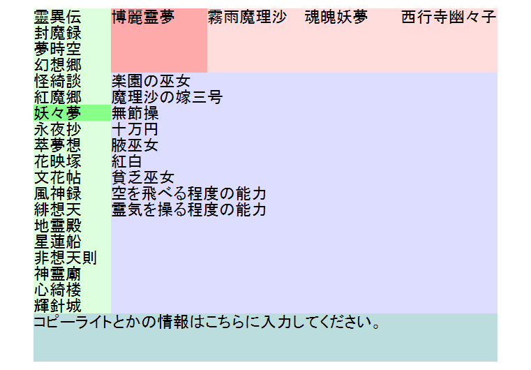

让我们来活用一下前两节学到的知识，写一个更复杂的排版。
这一节先用浮动定位来作为主要的排版方式，下一节将会用普通流定位来达到一模一样的排版效果，方便大家比较。
例5：用浮动定位方式排版，完成如下效果图。

解释：我们给各大块div都设置了相应的背景颜色，方便观察。
步骤：
CSSExample7.html
第4行：为了在中文操作系统下正常显示日文，加上meta标签，注明编码为UTF-8。
第7行：设置top div的宽度为75%。之所以用百分比，是为了适应不同分辨率的桌面，同时在用户调整浏览器窗口大小的时候，也能够自动适应。
第11行：设置left div的左外边距为5%。这一块就是左边的留白。
第12行：设置left div的宽度为15%。左边留白5%，加上left宽度15%，加上top宽度75%。留下来的5%正好就是右边的留白。
第28行：left div下的selected类名的div被单独设置背景颜色，这样有一个“被选中”的效果。
第34行：单独对top div下的div进行CSS控制，为了展现出不同的效果。
第35行：设置每个div的宽度为25%，这样4个div正好瓜分了top div的所有宽度。
第37行：设置每个div都为浮动向左。这样div在宽度足够的情况下就不会自动换行，可以表现出图中那样的排列方式。
为了让main和left低端对齐，我在mian里面加了很多br元素。其实正确的做法是写js让它们自动对齐，这里为了例子简单化就没写。
只要调整好每个div块的大小，出现顺序，剩下的就是通通让他们向左浮动了。
如果你看不懂上面截图的内容并且想要了解的话，可以狠狠的点击这里。
好啦，这一节就到这里，我们来总结一下：
练习2：在例7的页面中，试着把所有的CSS代码删除掉，观察显示效果（用以了解CSS究竟在控制页面显示中有多么重要的地位）。